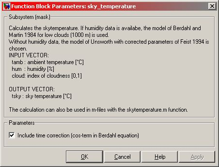

Sky_Temperature
Path: CARNOT/Basic/Weather_and_Sun
Purpose:
Calculates the skytemperature in °C.
Description:
When there is the relative humidity, the sky temperature is calculated by
the formula of Berdahl (1984). Otherwise the sky temperature is calculated by
the formula of Unsworth (1975).
This block is also available as workspace function
skytemperature.
Input:
| Tamb | : | ambient temperature in °C |
| hum | : | relative humidity in % (set to -999 if unkown) |
| Cloud | : | cloud index in [0..1] |
Output:
| Tsky | : | sky temperature in °C |
Parameters and Dialog Box:

Literature:
Duffie, J., Beckman, W.: Solar Engineering of thermal processes,
John Wiley & Sons, Inc. 2020
Berdahl, P.; Martin, M.: Characteristics of infrared sky radiation in the United
States. Solar Energy 3/4:321-336, 1984
Unsworth, M.H.: Longwave radiation at the ground -
Angular distribution of incomming radiation;
Quaterly Journal of the Royal Meteorological Society, Vol. 101, No. 427, 1975
Characteristics:
| Direct Feedthrough | : | Yes |
| Sample Time | : | Inherited from driving block |
| Vectorized | : | No |